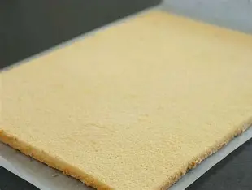
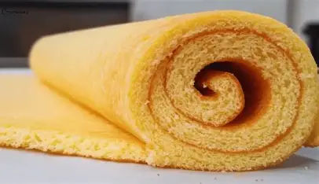
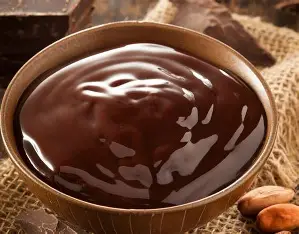
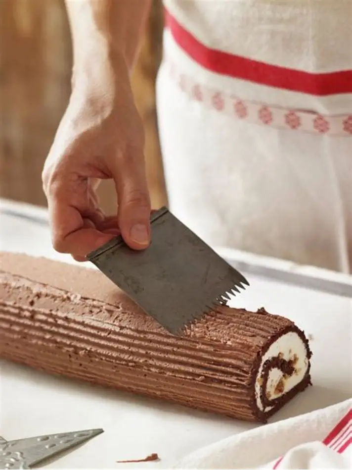

Bûche de Noël au chocolat – Recette simple
Ingrédients (6 à 8 personnes)
Pour la génoise :
- 4 œufs
- 100 g de sucre
- 100 g de farine
- 1 c. à café de levure (facultatif)
Pour la ganache au chocolat :
- 200 g de chocolat noir
- 20 cl de crème liquide
- 30 g de beurre
Pour la décoration :
- Sucre glace
- Copeaux de chocolat
- Copeaux de chocolat
Étapes
Préparer la génoise
- Préchauffe le four à 180°C.
- Sépare les blancs des jaunes.
- Fouette les jaunes + sucre jusqu’à obtenir une texture mousseuse.
- Ajoute la farine (et la levure si tu en mets).
- Monte les blancs en neige et incorpore-les délicatement à la spatule.
- Étale sur une plaque recouverte de papier cuisson (en rectangle).
- Enfourne 10 minutes environ : la pâte doit rester souple.

Rouler la génoise (important !)
- Sors la génoise du four.
- Pose-la sur un torchon humide et roule-la immédiatement avec le torchon.
- Laisse tiédir roulée (elle gardera sa forme).

Faire la ganache au chocolat
- Fais chauffer la crème.
- Verse-la chaude sur le chocolat cassé en morceaux.
- Mélange jusqu’à obtenir une crème lisse.
- Ajoute le beurre → brillance garantie.
- Laisse tiédir pour qu’elle épaississe un peu.

Montage de la bûche
- Déroule délicatement la génoise.
- Étale la moitié de la ganache.
- Reroule la bûche bien serré.
- Recouvre avec le reste de ganache.
- Fais des stries à la fourchette pour imiter le bois.

Décor
- Sucre glace
- Copeaux de chocolat
- Petites figurines
- Framboises, noisettes…